Ensanchar el espacio de nuestra tienda para vivir nuestra identidad sinodal eclesial es el sueño que ha movilizado a la Vida Religiosa en esta LVIII Asamblea Nacional.
Bajo la mirada amorosa de nuestra Madre, en su advocación de Nuestra Señora de la Salud, protectora de la Arquidiócesis de Morelia Michoacán, lugar donde converge la riqueza cultural de nuestros hermanos Purépechas, Nahuas, Otomís, Mazahuas, Matlatzincas, mestizos y los provenientes de otros pueblos, mostrando el rostro intercultural de esta tierra e iglesia particular, hacemos memoria de Tata Vasco quien sigue estando presente desde su dinamismo evangelizador sinodal y misionero que se caracterizó por validar la identidad de su gente, reconociendo su bagaje espiritual en la evangelización.
Del 5-7 de mayo 2023, 220 superiores mayores, delegados permanentes, o sus representantes, y presidentes de las CIRM locales y regionales, hemos profundizado las implicaciones y horizonte que implica una Vida Religiosa en clave sinodal a través de la escucha, liderazgo y discernimiento necesarios para hacer posible la iglesia que Dios quiere.
El lema de ensanchar el espacio de la tienda ha marcado el proceso vivido y los desafíos que implica esta andadura, parábola de surcar la noche con la memoria del Amor que impulsó a las mujeres del Alba a hacer posible estrenar la aurora de la vida resucitada; vida de luz, verdad, justicia, ternura, equidad y paz… la tan anhelada paz; estrenar el alba de nuevas racionalidades de igualdad, desde la común dignidad y responsabilidad bautismal.
Durante la Asamblea, hemos ensanchado la tienda para escuchar y albergar en el corazón, el llamado del Espíritu para fortalecer el ser y sentir como iglesia, siendo parte de las transformaciones que implica recuperar este modo de caminar juntas y juntos en las decisiones de la misión para ser una iglesia en salida. Dentro de la iglesia a la que amamos, queremos ser una Vida Religiosa samaritana que lleve el vino nuevo de la compasión y la esperanza a los heridos y rotos de la humanidad.
Desde la valentía y confianza de las mujeres del Alba y de San Juan Diego, queremos comprometernos como Vida Religiosa en México a rechazar toda relación de desigualdad, de abuso de poder y de consciencia, a recrear relaciones de sororidad y fraternidad que hagan creíble la propuesta evangelizadora a la humanidad, como realmente buena noticia para los jóvenes, niños/niñas, mujeres y todos los que sufren marginación y vulnerabilidad.
Cómo líderes de nuestras congregaciones queremos acoger el desafío de encaminar nuestros pasos en la dirección de liderazgos que promueven la circularidad y la corresponsabilidad validando los dones de las hermanas/os de diferentes ministerios y servicios al interior de la vida consagrada, en la iglesia y en la sociedad.
Reconocemos que tenemos que romper con estructuras caducas de control y autoritarismo para dar paso a la confianza y a la participación corresponsable y creativa.
Queremos comprometeros a aprender e implementar la escucha, el diálogo y el discernimiento como alternativa de hacer consensos por el bien común, reaprendiendo una y otra vez la conversación espiritual como instrumento de discernimiento comunitario.
Queremos comprometernos a aprender y recorrer los caminos de la inclusión y vinculación acogiendo la tensión propia del camino y rechazando todo lo que sea exclusión, descalificación y división.
Nos sentimos llamadas/os a recorrer el camino de la vinculación para la misión y la formación, saliendo de la auto referencialidad de nuestros Carismas particulares.
Nos comprometemos a hacer posible “Que todas/os seamos uno” desde la intercongregacionalidad y formar el corazón para ser mujeres y hombres maduros, en permanente crecimiento y conversión espiritual.
Invitamos a todos los institutos de Vida Religiosa a sumarse a este movimiento de sinodalidad para que, junto con todas sus hermanas y hermanos, visibilicemos la fuerza de la unidad en la riqueza de la diversidad; convocamos especialmente a nuestros hermanos religiosos.
Agradecemos a Mons. Julio César Salcedo Aquino MJ, Obispo de la Diócesis de Tlaxcala y presidente de la Dimensión Episcopal para la Vida consagrada por su presencia cercana; a la CIRM de Morelia y a nuestros hermanos Obispos Mons. Carlos Garfias Merlos, Arzobispo de la Arquidiócesis de Morelia y Mons. Hércules Medina, Vicario de la Vida Consagrada, el espacio ensanchado de su tienda que hizo posible esta experiencia de comunión en la diversidad, en la búsqueda de la fidelidad creativa a nuestra vocación-misión, y pedimos al pequeño y gran mártir San José Sánchez del Rio, nos dé el arrojo y la valentía para responder a las llamadas del Espíritu Santo de ser y hacer el único modo de ser iglesia sinodal en este milenio.
En nombre de las/los superiores mayores de religiosas/os de México:
- Hna. Juana Ángeles Zárate Celedón CSC
- Presidenta
- P. José Luis Loyola Abogado MSpS
- Vicepresidente
- Hna. Irma Mixcoac Villegas MEF
- Vicepresidenta
- Hna. Rosa Margarita Mayoral CSC
- Secretaria General
- Fr. Cándido Celestino González OCD
- P. Ernesto Canseco del Valle MJ
- Hno. Luis Felipe González Ruíz FMS
- Hna. Rosana Guízar Suárez STJ
- P. Ariel Martínez Morales OMI
- Fr. José Miranda Martín OCD
- Hna. Ma. de la Luz Nava M. MCMI
- Hna. Ma. de los Ángeles Rodríguez de Anda SJS
- Hna. Ma. Guadalupe Torres Villagómez HJ
- P. Marco Antonio Véliz Cortés SchP

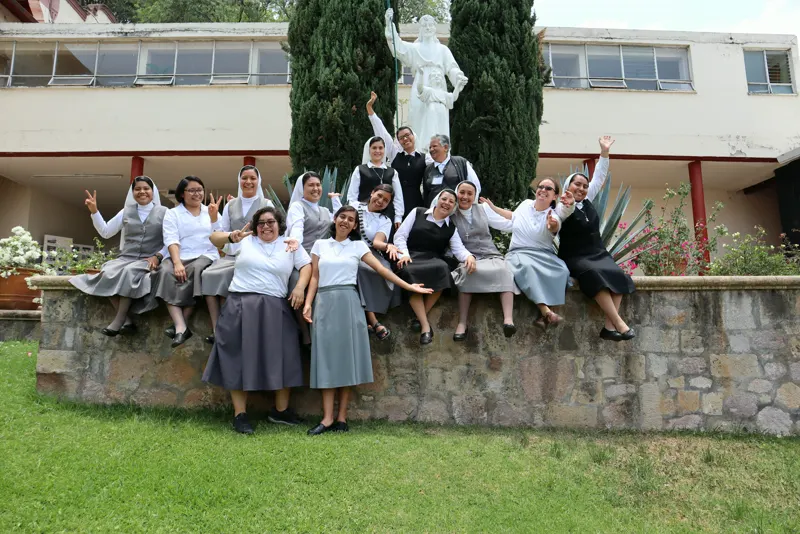

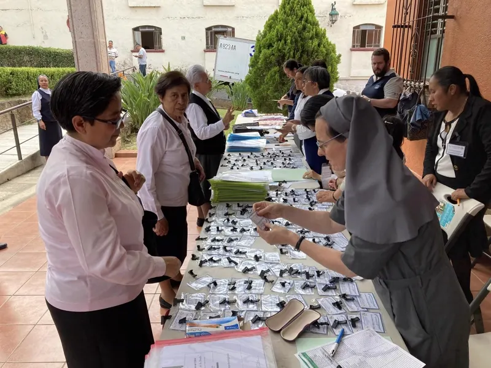

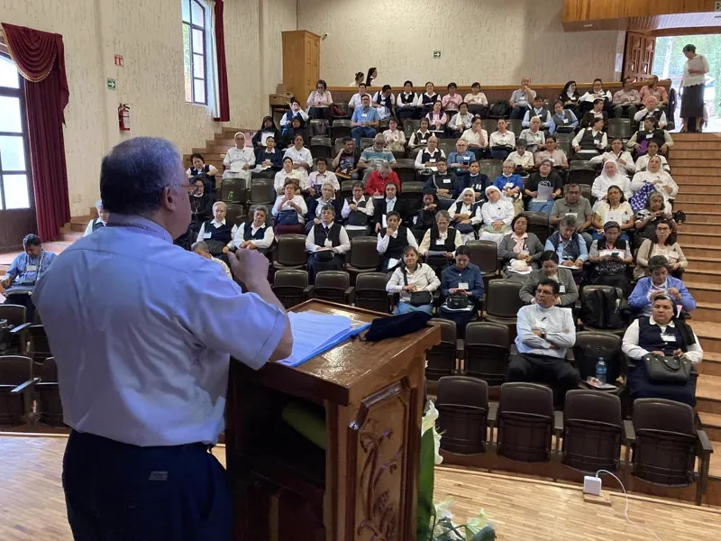

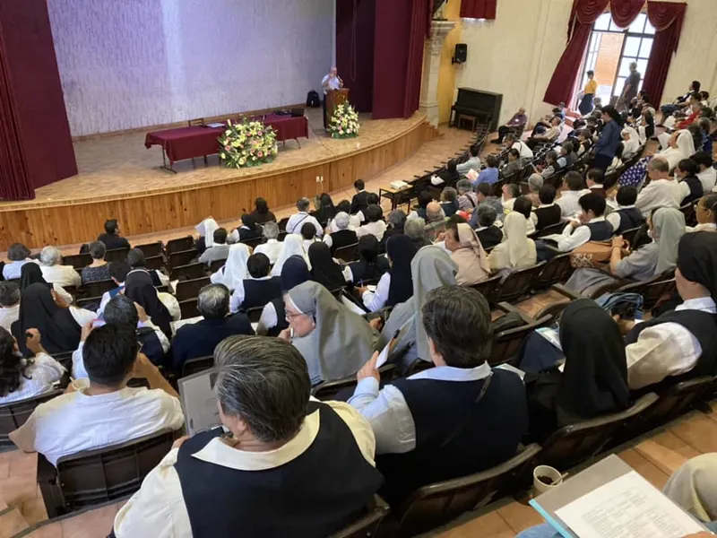

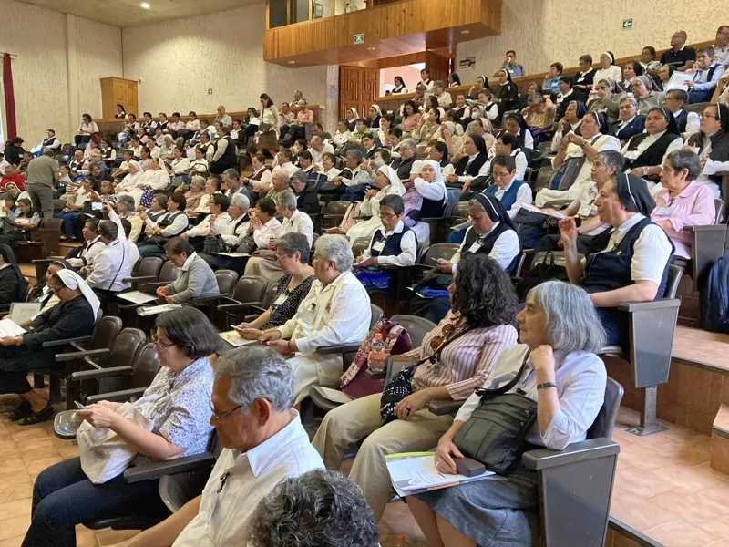

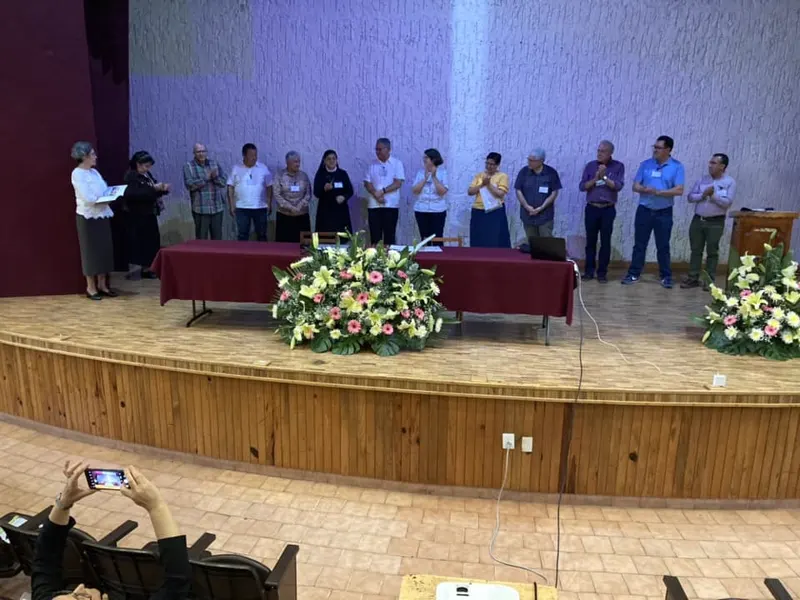

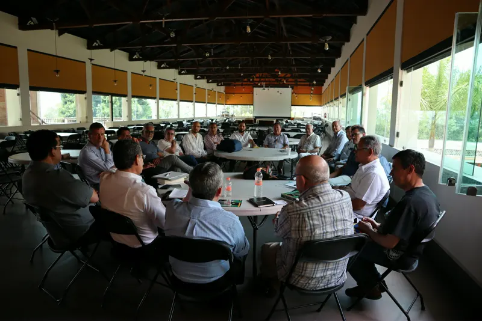

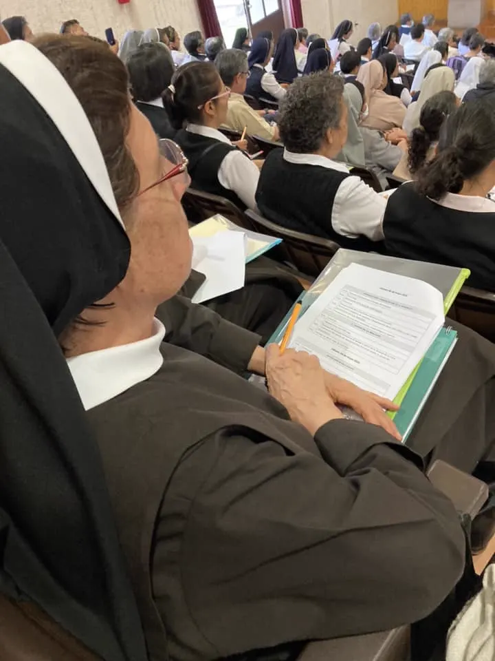

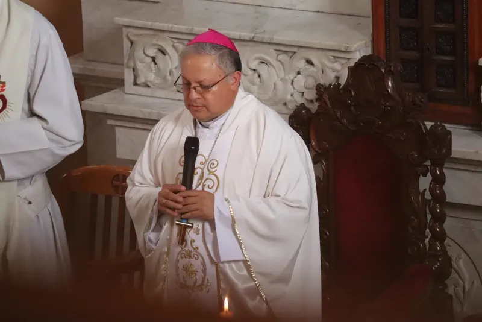

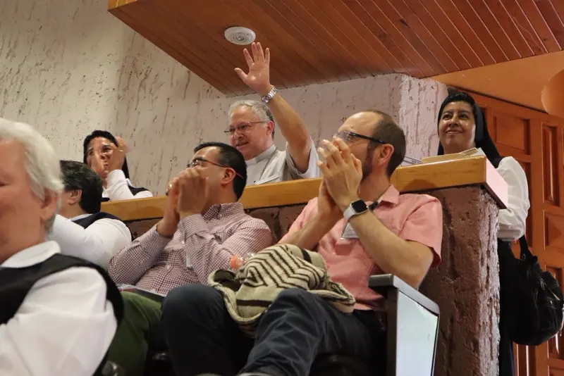

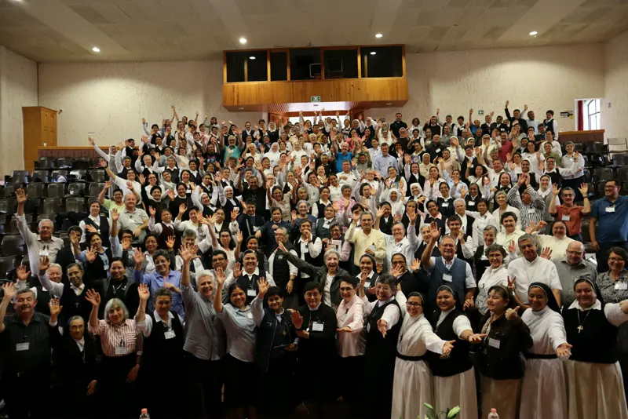

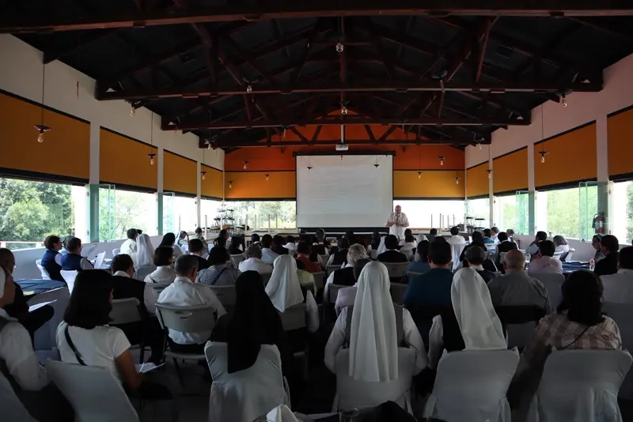

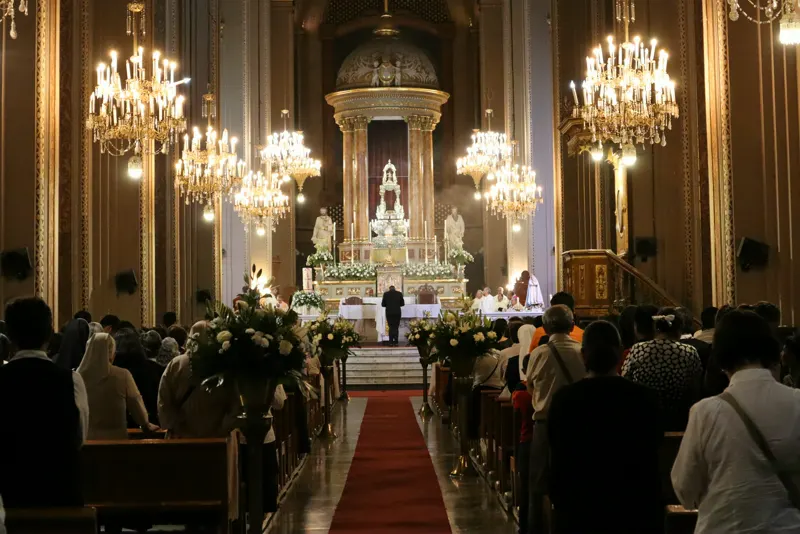

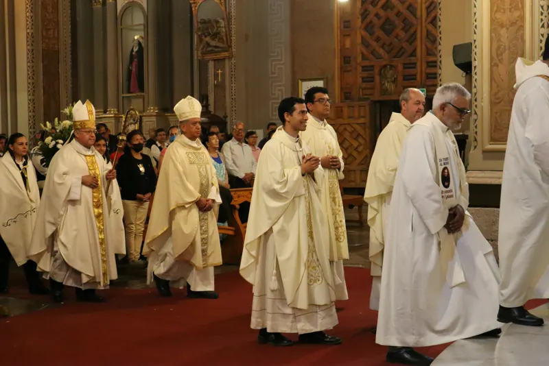

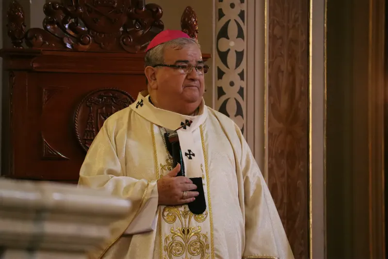

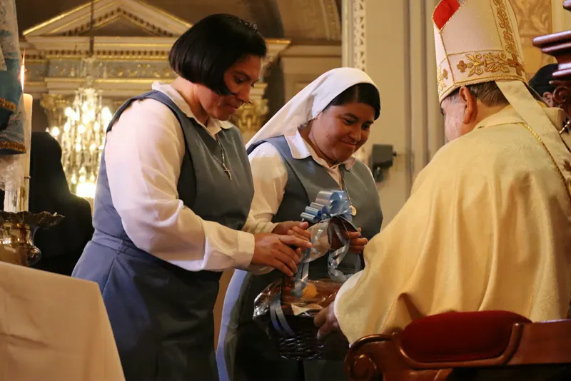

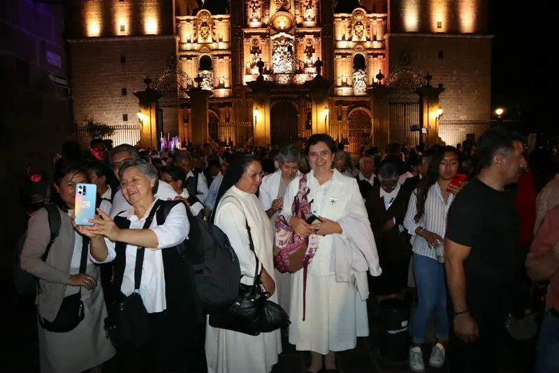
Te puede interesar

Encuentro Provincial, Provincia Eclesiástica de Morelia
Bajo la guía de +José Armando Álvarez Cano, Arzobispo Metropolitano de Morelia, y con la presencia de los señores Obispos de las Diócesis sufragáneas: +Juan Carlos Arcq Guzmán, de…

Llamado a la Casa del Padre
"Dale, Señor, el descanso eterno. Y brille para él la luz perpetua. Que su alma y las almas de todos los fieles difuntos, por la misericordia de Dios, descansen en paz. Amén."

Peregrinación Sacerdotal
El Presbiterio de Morelia celebra el don del sacerdocio y la recepción del palio Arzobispal de +José Armando Álvarez Cano, Arzobispo de Morelia .